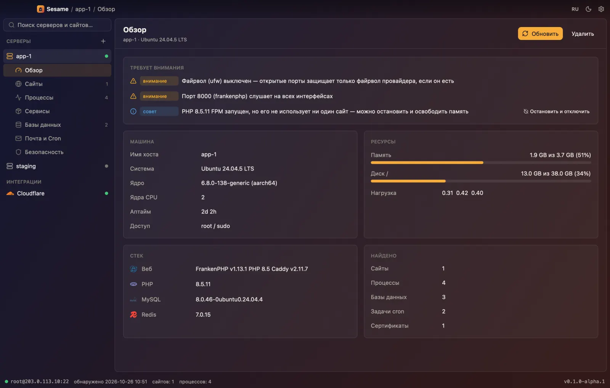
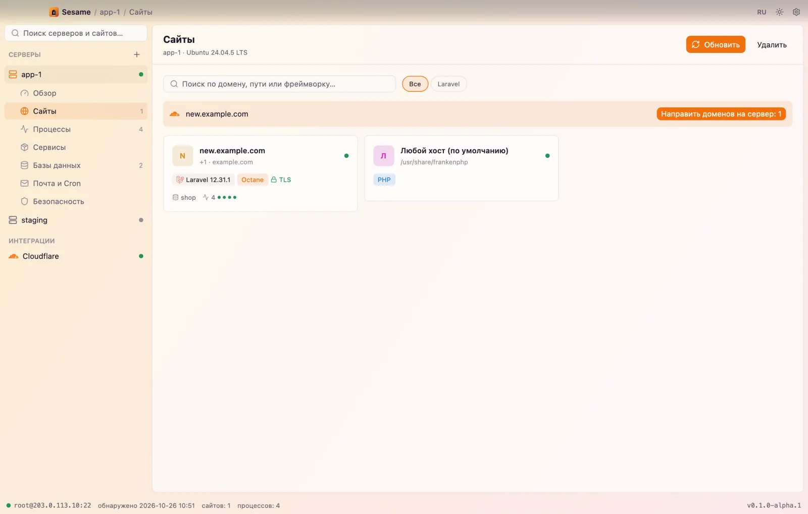
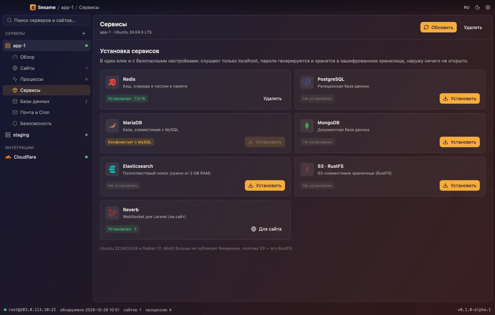
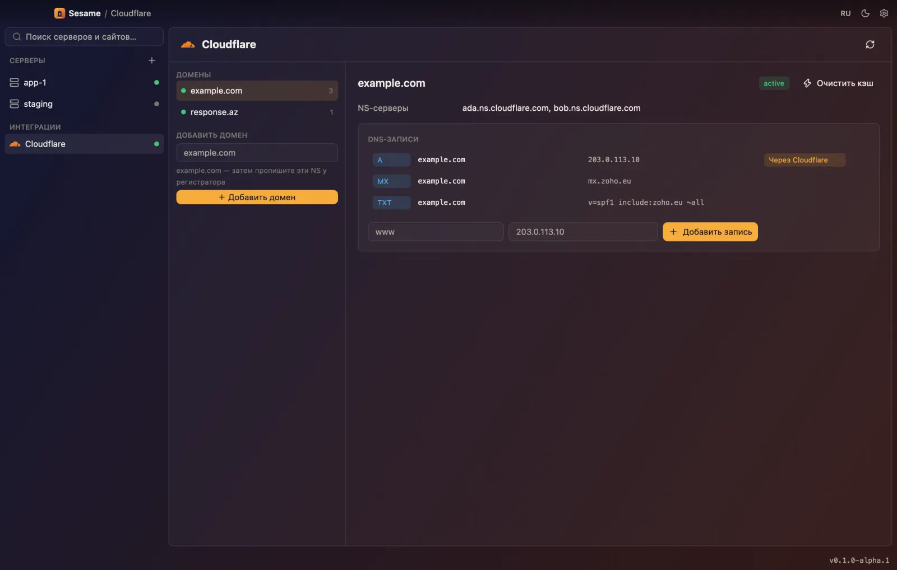
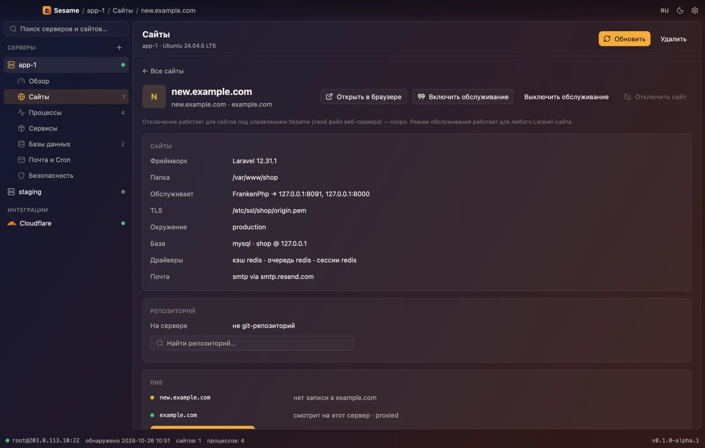

Откройте свои серверы.
Нативный менеджер серверов для Laravel. Дайте SSH — он найдёт все сайты, базы и процессы на сервере и поможет ими управлять.
Бесплатно и с открытым кодом. Сейчас macOS, следом Windows. На сервер ничего ставить не нужно.

От входа по SSH до понятной картины за минуту.
Подключение
ssh-agent, ключ или пароль. Ключ хоста сверяется с known_hosts. Ни агента, ни демона, ни открытого порта.
Обнаружение
Одна проверка только на чтение находит сайты в Caddy, Nginx и Apache, Laravel-приложения, воркеры, базы, cron, сертификаты и файрвол.
Управление
Новые изолированные сайты, сервисы в один клик, базы, деплои из GitHub и DNS в Cloudflare — каждое изменение сначала показывается.
Каждый сайт — в своей комнате.
У каждого нового сайта свой Linux-пользователь, свой пул PHP-FPM или процесс Octane, свой пользователь базы и Redis ACL только на его ключи. Веб-сервер читает public/ — но никогда ваш .env.
- свой пользователь
- свой пул
- своя база
- Redis ACL
- поддомены

Базы в один клик. Ничего, пока не попросите.
Redis, PostgreSQL, MariaDB, MongoDB, Elasticsearch, S3 на RustFS и Reverb. Только localhost, пароли генерируются и хранятся в зашифрованном хранилище. phpMyAdmin и pgAdmin открываются через SSH-туннель, а не в интернет.
- только localhost
- данные сохраняются
- панели через туннель

Push в GitHub. Направить домен. Готово.
Привяжите сайт к репозиторию и ветке: Sesame добавит deploy-ключ только на чтение, заберёт код, поставит зависимости, выполнит миграции и перезапустит воркеры. Зоны и записи Cloudflare — рядом с сайтом, с кнопкой «направить на этот сервер».
- deploy-ключи
- миграции
- DNS-записи
- очистка кэша

Когда нужно своими руками.
Файловый менеджер по SFTP, запертый в папке одного сайта, с небольшим редактором. Настоящий терминал xterm-256color в том же окне.
- SFTP-клетка
- редактор
- PTY-терминал

Пусть Claude ведёт ваши серверы. На ваших условиях.
Sesame говорит на MCP и REST. Агенты читают всё сразу, а каждое изменение всплывает в приложении и не выполняется, пока вы не нажмёте «Разрешить». Каждый шаг пишется в журнал с именем агента.
# Claude Code
claude mcp add sesame -- sesame mcp
# Claude Desktop, Cursor
{ "mcpServers": { "sesame": {
"command": "sesame", "args": ["mcp"] } } }sesame api-token # shown once
sesame serve # 127.0.0.1:7878
curl -X POST localhost:7878/v1/tools/list_sites \
-H "Authorization: Bearer $TOKEN" \
-d '{"server":"prod"}'sesame add prod root@203.0.113.10
sesame discover prod
sesame do prod new-site shop.example.com \
--database postgres --redis --queue
sesame do prod install redisВаши серверы, ваш Mac, ваши ключи.
Сначала только чтение
Обнаружение ничего не пишет и не читает пароли и ключи из .env.
Зашифрованное хранилище
XChaCha20-Poly1305 ключом из мастер-пароля через Argon2id.
Подтвердить, потом выполнить
План перечисляет шаги. Перед удалением — бэкап и ввод имени.
Не в командной строке
Секреты идут через stdin — никогда в argv и никогда в ps.
Подписанные обновления
Релизы проверяются подписью ed25519, прежде чем заменить приложение.
Бесплатно там, где работает на вашей машине.
Self-hosted
$0навсегда
- Сколько угодно серверов и сайтов
- MCP и REST для агентов
- Cloudflare и GitHub
- Apache-2.0, можно форкать
Sesame Cloud
Позжедля команд
- Общие серверы для команды
- Веб- и мобильная панель
- Роли, подтверждения и журнал в одном месте
- Оповещения и бэкапы по расписанию
Десктоп-приложение остаётся бесплатным и открытым. Cloud будет платным за хостинг, а не за то, что у вас уже есть.
Вопросы
Чем это отличается от Forge или Ploi?
Это веб-панели, у которых остаётся доступ к вашим серверам. Sesame — приложение на вашем Mac, работает по обычному SSH: ключи остаются у вас, а сервер, настроенный вручную, тоже можно взять под управление.
А от Coolify?
Coolify живёт на сервере и собирает контейнеры. Sesame ничего не ставит на сервер и ведёт классический стек Laravel: Caddy или Nginx, PHP-FPM или Octane, supervisor, системные базы.
Что он меняет на сервере?
При обнаружении — ничего. Всё остальное — план, который вы видите заранее; необратимые шаги просят ввести имя, перед удалением базы делается бэкап.
Где хранятся пароли?
В зашифрованном хранилище на вашем Mac, которое открывается мастер-паролем или файлом-ключом. Никогда в открытом виде в базе и никогда в логах.
Какие серверы поддерживаются?
Ubuntu 22.04/24.04 и Debian 12, amd64 и arm64. Обнаружение работает на большинстве Linux-серверов.
Откройте свои серверы.
Попробуйте альфу сначала на тестовом сервере — и расскажите, что он нашёл.
Скачать Sesame